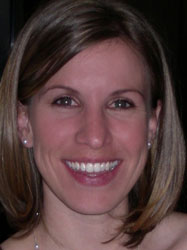

To see my complete resume click here.
I started playing with makeup when I was in grade school.
I was an actor, director and dancer and I realized how putting
on makeup helped to create the character I was trying to become.
Through the years I continued to learn the craft through trial
and error, mostly in the arena of theater, and getting friends
ready for special events.
After going to University and realizing that I would be happy doing
makeup for the rest of my life, I attended The Studio Makeup Academy
in Hollywood and received my Master Makeup Artist Certification in
Beauty and Special Effects. I later returned to take a course in air
brush technique. I spent much of the years following school in the film
and television field.
I spent a few years transitioning from film to print, which is the area
I work in most today. I have worked with some wonderful photographers,
been published in a number of magazines, and continue to grow and learn
something each day.
I still love how makeup can create a character, taking the quiet, timid,
sometimes even plain-looking girl who walks into the room in the
morning and transforming her into an energetic, fearless, beautiful
model, ready to pose and strut her stuff for the camera. It really
is an amazing job, and I love doing it.